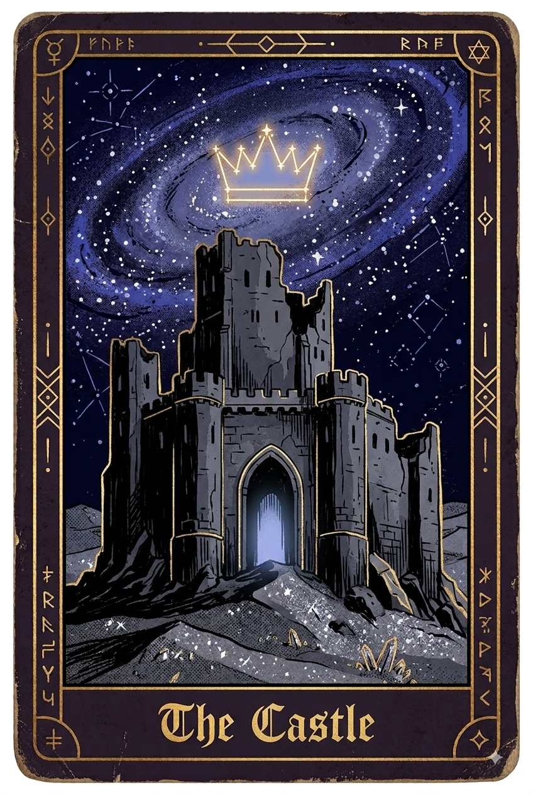

Void - IV - The Castle The two travelled across the sands, following the star towards the library. Selph imagined what it would be like. Would it be chaotic, like the Tower had been, filled with passionate researchers and experimenters? Or would it be calm, like the Commune, filled with analytical students and academics? Well, the Commune had been calm, before they set it on fire. Momos sighed. He had been watching the sky, with its many swirling galaxies and cosmic clouds, but he had seen it before—literally every day. “Hey, Selph, have you ever pierced your eyes with needles out of boredom?” “No… I haven’t…” Momos tilted his mask upwards, and a long tongue unfurled from beneath it, holding two golden pins. “Daah yaah wuunuuh?” “No… thanks, Momos.” Momos gulped the pins back down with a sigh. “Ooh, Selph! Check it out!” Momos said as he came to a stop. On the horizon appeared a mountain range, its rock as dark and silvery as the sands. It was mostly flat, but it spanned a great distance. At its centre, conveniently situated where the two were heading, appeared an opening: the mouth of a canyon. Their star sat perfectly above it. “What do you think, Momos? Do we try to go around it, through it… or under it?” Momos produced a spoon for the final suggestion. Selph laughed. Momos threw the spoon aside and produced a pickaxe with the same sleight of hand. “Clever trick, but we’d need more than a pickaxe to go under a mountain. Even so, going through it seems far more interesting.” Momos shrugged and threw the pickaxe aside as well. Selph knew that “interesting” certainly did not always mean safe, but after walking through miles of featureless sand, he could not help feeling drawn to the canyon out of sheer novelty. Before they knew it, they were standing at its mouth. The walls rose far above them like two great rocky pillars flanking an ancient gate. Unfortunately, the canyon appeared to zigzag so tightly that they could not ascertain what lay ahead without entering. So they entered. Twisting and turning, they navigated the narrow rocky passage. The novelty of the change in scenery soon wore off, as the canyon began to feel much like the endless desert. “Hey, Selph, I’m probably only saying this because I’m bored—and hell, am I bored—but have you thought about going back to the Tower?” Momos asked. Selph continued walking in contemplative silence before answering in a flat, earnest tone. “I have.” “Why not go back? It was damn good fun!” “It was, but it was also a numb death.” “Geez Louise…” “Do you disagree?” Selph asked without a semblance of judgement. “…No,” Momos replied, sounding like a child reluctantly acknowledging the unfairness of the adult world. They continued onwards. Selph often looked up at the star, checking and rechecking that it had not abandoned them. One time, when he looked up, he saw the sand above them shift as small particles of rock tinkled down the walls of the canyon. “I think we may have some travelling companions,” Momos said quietly. “Friendly?” Selph asked hopefully. Momos stopped momentarily and seemed to smell, or otherwise sense, the air above them. “Almost certainly not. Let’s proceed with haste, lest we end up as chow.” They quickened their pace, their casual walk becoming a focused march. Weaving through the canyon, they pressed onwards in silent anticipation. Screeches and screams echoed above them as dark grey figures scrambled down the walls. “Up we go!” Momos said, lifting Selph onto his back in a single motion before breaking into a full sprint. As Selph clung to Momos, he looked over his shoulder to get a better view of their assailants. They appeared demonic, yet they were unlike any demons he had seen before. They were muscular and savage-looking. They possessed varying numbers of limbs and came in many different sizes, but all of them bore enormous, sharp claws, each as long as Momos’s forearm. Like Momos, they wore entertainers’ costumes. Torn striped sleeves, bright collars, and broken bells clung to their grey bodies. Their other distinguishing feature was their masks. Each mask was cracked and covered only part of its wearer’s face, leaving blade-laden mouths entirely exposed. They barked and howled as they galloped after them, drawing ever closer. “What are they!?” cried Selph. “Hungry as hell!” Momos called as he continued to race between the canyon walls at breakneck speed. The canyon began to widen, and the ground ascended through an expanse of large rocks and boulders. Momos leapt and bounded between the rocks, trying to gain more distance. It proved effective. The creatures were far less nimble than Momos and began to slow as they entered the natural minefield. Selph turned to see what lay ahead. At the top of the canyon sat some kind of structure. That brief moment of distraction was all it took. Momos leapt from the largest boulder yet, and Selph was not ready for the landing. He bounced from Momos’s back and rolled into the grey, sandy dust as Momos hit the ground with a thump. The demons surrounded Selph, spreading out like hunting animals. Momos pivoted and jumped back, positioning himself between Selph and the creatures. They snarled and spat as they attempted to encircle them. Momos yelled and kicked at them, preventing them from advancing any farther. Fragments of their masks clung to their faces as they barked and snapped, each retaining an expression of laughter. They all looked similar to Momos. Selph threw a rock into the face of the closest creature, shattering some of its spine-like teeth. “Get the FUCK back!” Selph found himself shouting, before picking up another rock. Momos quickly glanced over his shoulder at the structure above them. “Selph. Go! Up there!” Momos called. Momos then produced a large, ornate, curved blade from his sleeve. The creatures took a step backwards. Selph threw his rock in the face of the closest beast for what little it was worth. “Go now!” Momos called again. “I can’t just leave you.” Selph’s own words surprised him; he knew he had said them before, in another time, another life. At that moment one of the creatures tackled Selph to the ground and sunk its claws into his shoulders. It then dug its teeth into his chest, and as it did Selph felt a wave of miasma wash over him, as though it had drugged him. But it was more than that—he felt as though he were going to fade into a dreamless sleep. Before it could continue, the demon fell off, dead. Momos had taken its head off in one slash, waking Selph back up. “Go Selph!” Momos said, without a trace of his usual tone. ‘Who’s Selph?’ Selph thought to himself as the miasma was still in his system. ‘Oh, that’s me!’ he realised as the feeling passed. Selph could see Momos knew what he was doing and so he began sprinting up the canyon. As he did his heart panged in his chest, telling him to turn around. He pictured the two shadows he had left back at the caravan. A bark was cut short by a high-pitched yelp behind him. Selph looked back and saw that one of the creatures had been sliced in two, its inky blood dripping into the sand. Selph kept running as screams and cries erupted behind him. The structure ahead began to take shape: it was a ruin, a ruin of a castle. Selph ran through the doorway, which would once have held a large gate, and stepped into a great hall. He looked upwards and saw only darkness: deep, engrossing darkness. The stars outside illuminated only half of the hall in which he stood. The rest remained hidden and unknown. Quickly quelling his curiosity, he returned to the doorway and watched the horizon for any sign of movement. His heart—or what he imagined his heart had once been—beat within his chest. Eventually, something began to appear. A figure. It was Momos. He staggered forwards, dragging himself along. “Momos!” Selph cried as he ran out to meet him. Selph could see the damage as he approached. Bells were missing, sleeves were torn, and exposed skin had been savaged. Most noticeable of all was his mask. It had lost its shine and now bore a thick crack. “You should have seen the other guy.” “Are you okay? You look hurt!” Momos looked down at himself. “This? Ah, this is all cosmetic. I’ll shake it off in no time.” “Did you kill them all?” “No, fortunately the rest backed off as I made my way up here.” “And your mask?” Momos stopped suddenly and hesitantly placed a hand against his face. One finger traced a crack that ran from his eye across his cheek. “That’s… less good.” He sat in silence for a moment, slowly stroking his face, staring off into the distance. Selph opened his mouth to apologize. “Well, no point dwelling on it! That’s the trouble with having no fun!” he said, snapping back into his usual jovial manner and quickly pulling away his hand from his face. Selph frowned, but chose not to press him, the crack on Momos’ face looked like a scratch that Momos didn't want to be seen itching. “Shall we press on?” Momos quickly asked. “No, you need to rest. Let’s stay here—hopefully those creatures will lose interest and go elsewhere.” “Find anything good in here?” Momos asked as he limped through the doorway and into the dark great hall. “No, I couldn’t see anything—” Selph began. A hundred blue lights snapped into existence. Staircases, balconies, archways, and a dozen different doors leading elsewhere were suddenly illuminated. The hall was perfectly symmetrical, yet worryingly complex in its layout. “Oooh, that was a weird feeling I got just now, I felt as though something stepped over my grave, or more accurately stepped into my grave and went looking!” Momos said. Selph quickly looked over his shoulder and found that the entrance was now closed. The missing gate was suddenly present, bolted and padlocked. “Momos, the door is gone! Do you know what this is? Are we in danger?” “Ha! We’re almost certainly in danger. As for what this is, unfortunately, I don’t know. There are so many different things in this desert that you could probably live a thousand lives and still see only a fraction of a fraction of it all. But it's not good, I can tell you that much.” Selph looked all about as if another one of those sharp-toothed creatures was going to jump out from an unwatched corner. “Don’t worry, Selph, a lot of these places lie — a lot of them are just a load of nothing, pretending to be something,” Momos continued. Activity could be heard from one of the rooms. “Still dangerous, though.” Momos pulled a short sword from his sleeve and passed it to Selph. “I don’t think I’ll be any good with this,” Selph said as he took the handle. “No one is good at anything when they first begin.” “…Okay, but what about you?” “I need something more… fun,” Momos replied, appearing to consider his options. “Aha!” He produced three large, ornate juggling pins and immediately began juggling them. “I suppose we look for whoever owns this place and ask them to let us go,” Selph said. “Ever tried to steal a plaything from a baby?” Momos asked casually while flipping pin after pin in perfect form. Selph led the way, ascending the stairs towards the room from which they had heard the noise. The door opened into a long, narrow hallway lined with many more doors. He looked back into the room they had just left and saw that it was different. In fact, it had changed entirely. The locked gate through which they had entered was gone. “Momos! Our way back is gone!” “Then deeper into the belly we go, I suppose,” Momos said without an ounce of concern in his voice. For the first time since arriving in this world, Selph felt cold. Selph gripped tighter on his sword. They walked and walked, passing through door after door, ascending and descending staircases, and traversing halls and desolate rooms devoid of life or decoration, winding like the intestines of a large beast. The halls were silent, except for the crackle of the blue flames. Momos continued juggling, occasionally performing elaborate tricks. He spun pins on his nose and tossed them from beneath one leg. “Hey, Momos, what exactly were those things back there?” Selph asked. “Feral demons,” Momos replied flatly. “They weren't going to eat us, not physically anyway. But you felt that didn't you. They would have eaten our identities, our names.” Momos continued. “But I don’t really have a name, do I?” “True, less to grab onto, which can be a good thing, but they would have still eaten it, that and everything else, your memories, both of this place and whatever you’ve managed to hold onto from the other place.” “How do they get like that? How do they become feral?” “How do we become feral…” Momos said with a dark grin behind his mask. “Bad standup routines. Poor diet. Chronic absence of applause.” “Momos.” His hand rose to the crack in his mask. “They forgot how to remain themselves. They’re nameless things now.” Selph sat with that for a moment. Technically he was nameless too; it had been Momos that had provided him this nickname. “…Thank you for what you did back there, Momos,” Selph said. Momos turned and looked at him, appearing ready to say something before reconsidering. “Anytime! You have a knack for trouble! Selph, the Seeker of Struggles!” he replied with a laugh, bringing a smirk to Selph’s face. The two walked on in silence for a while. Eventually turning a corner they entered what seemed to be a giant library, with books that went on forever, all illuminated by the same blue flames. Around the edges of the shelves were decorative flourishes in white porcelain like material, and within them were patterns of faces, repeating across the cases. Selph picked up a heavy book from a shelf and inspected it. It was bound together, its spine and cover were decorated with the same white material. On the front was an image, an illustration of a mask, a demon’s mask, the mask bore a familiar laughing expression. It resembled the mask of the creature that had attacked him. The title of the book was a word, a word Selph couldn’t read. “Do you know what this word says, Momos?” Momos paused when he saw the book. “It’s a name,” he said. Momos then wandered off whilst flipping and catching his pins, clearly not wanting to answer any more questions. Selph then flipped through the pages, it seemed to describe a person, their life, their events, their thoughts and feelings. He then flipped through more books, it was more of the same, books and books of demons and their lives. He looked up at the hundreds and hundreds of stacked up cases he could see, he felt as though a lifetime in this library would only scratch the surface. Selph wondered if there was anything else beyond just books of demon names, and as though something had read his mind, one of the books a few bookcases down pushed itself halfway out. The book was different from the others—it didn’t bear a mask, it had a face, and somehow he knew it was his face. There was a word above it that he couldn’t read: a name. Was this his name? His true name? He imagined what it would be like, to remember himself, to know what he should be doing, to have a name, to have meaning. He imagined it as a lock and key, two things meant to be brought together. He stood for a moment, his hesitation surprising himself. He walked over and reached out to take it. As he did so the name on the cover moved, it quickly slithered off the cover and inside the book. He opened the book, he saw the name on the first pages and as he did the name quickly moved like an insect and hid itself somewhere else among the pages. As he turned the pages, he felt the pages themselves come to his fingers, as though someone was impatiently turning the pages for him. The book described who he was, or at least started by describing who he was here, the caravan, the tower, the commune. It was all here. With one odd detail absent, when Momos had called him ‘Selph’. Selph then began to flick through further, it described their encounter outside with the demons and then their very journey up until this point. It continued, vaguely saying that he would then become part of a kingdom. Selph then tried to look for his past, his time before the silver sands, but as he tried to turn the pages a disembodied hand shut the book closed. Selph staggered back, as the library around them juddered, the books and shelves were then pulled away and tucked behind the walls as the entire room was reshaped. Selph and Momos found themselves back in the stone corridor they had been in before. “What did you do, Selph?” Momos asked. “I’m not sure…” They continued on, trying to hunt for the library, but it never reappeared. “So, something wants us here, and perhaps it was to offer us something or trade with us. So surely it wants us to come closer to do so, but it doesn’t want us to meet it… Why?” Selph pondered aloud. “Probably scared of my amazing skills,” Momos said proudly as he spun a pin on his head. “Hmm.” Selph thought for a little longer. “Perhaps that is somewhat true,” he continued as he inspected his sword. “Whatever is here has had every opportunity to attack us, but hasn’t. Maybe it doesn’t want to attack us—maybe it just doesn’t want us to attack it.” Selph placed the sword on the floor and continued without it. “Is that a clever idea, going in unarm—” Momos began, but he was cut short as they rounded the corner and found themselves standing in a gigantic hall. The hall was the coldest place they had been to in this beast’s belly, entirely devoid of warmth. Old, faded banners lined the walls between large, empty suits of armour. At the far end of the hall stood an elevated platform at the top of a series of stone steps. Upon it sat a great throne. Seated on the throne was a robed and crowned figure wearing a blank, faceless mask. Momos and Selph stood and stared for a moment. “Is that a demon?” Selph asked. “I don’t think so,” Momos replied in a shout-whisper that echoed through the great hall. “Whoops,” he added in the very same shout-whisper, which echoed once again. “Approach,” hailed a deep voice from the other end of the hall. Selph approached cautiously, while Momos practically strode forwards, still throwing and catching his pins. As they passed the large, thick suits of armour, each adorned with metal masks with various demon-like expressions, but something seemed off about them: at certain angles, the light seemed to pass straight through them, as if they weren’t there. The banners were strange too, entirely blank, devoid of sigil or symbol. It seemed as though, if Selph reached out to touch them, his hand would pass straight through, finding nothing to hold onto. They then came to a stop at the foot of the steps leading to the throne. “You come looking for a king. Pledge your fealty, and you may become denizens of my kingdom,” the figure said. His voice echoed through the hall, sounding far greater than Selph would have expected from someone of his stature. “Thank you, but we were actually travelling in hopes of finding a-” “Library? I have many libraries in my kingdom, and I can grant you access to all of them and to everything within them.” He then waved a hand and a door appeared and opened, revealing the library. It appeared the same as it did before, but now the blue flames flowing inwards on an unseen wind, as though trying to pull him in. He could see it, the book with his face on it, still hanging halfway out of the shelf, waiting. Selph instinctively took a step up towards it, as though it were an invitation. It wasn’t. “Stop. You’ll have access to the library and much more, but only once you pledge,” the king said. “How is it you have a book with my face?” “It has more than just your face. It has who you are, your name.” Selph fell quiet. The king drummed his clawed fingers on his stone throne, making a tinking sound as if they were made of glass. Selph noted that the king's cast iron crown also appeared clawed like his fingers, each of the points crooked and gnarled. “I can offer you all this, just name me your king.” Then a familiar feeling came into his mind, a presence. It put a cold shiver down Selph’s body. A voice whispered into his mind, “that's not you,” it said, before fading away and leaving him to his thoughts. Looking back to the library beyond the wall, it didn’t appear right. It seemed ethereal, the books almost translucent in the blue flickering light. Selph also noticed another change, the face on the book too, it was still his face, but it was different, altered somehow. Selph then carefully half-lifted his guiding card from his pocket. The library illustration remained unchanged, under its star as it was before. “Thank you, I appreciate it, but we’re looking for a specific library out there.” Selph said. Momos looked around in a theatrical style, with a hand above his eyes. “A king without people is hardly a king. You’re just a man with a spiky hat at this point,” Momos said. As he said this, the king’s appearance almost flickered, as though he wasn’t entirely there. He jerked and sat upright, gripping his throne as though tea had been spilt on him. The throne room shook, as the walls appeared to close in for a moment before coming to a stop as the king recomposed himself. “I see you, creature. You’re starting to forget yourself, aren’t you?” the king said. Momos instinctively touched the crack in the mask, a miniature canyon on his cheek. “You’re aimlessly leading this poor soul round and around the desert, until what? You forget your name, become feral, and kill your companion here.” The king then uttered something that made Selph feel almost sick. It was spoken in a language that was not truly a language, but something deeper and more intimate. Momos dropped all three of his pins and froze with a choking sound. Somehow, Selph knew what the king had said. It was Momos’s true name. He felt it. The king held out one hand and curled it into a tight fist. At the same moment, Momos cracked and crumpled as though he were a balled-up piece of paper before collapsing to the floor. “Momos!” Selph cried as he ran to him. “I detest jesters in my court. They behave as if there’s none above them,” the king said. “What have you done to him!?” Selph demanded. “Unimportant. Where else will you go, just travelling these endless sands with that thing? Directionless, until the inevitable. Think what you stand to gain, now answer my offer. Pledge fealty, or become an enemy of the kingdom.” From within the library Selph saw a disembodied hand with clawed fingers pull the book with his face out further. Selph balled his hands into fists. He thought of that shadow cracking the whip, he thought of poor Momos now on the floor and strangely he also thought of the two shadows he had said goodbye to on the caravan. “Go to hell!” Selph cried. Selph hastily picked up one of the thick juggling pins, wielding it like a club, and approached before stopping himself. Could the king do the same thing to him? Could he crumple Selph within his fist? It did not matter, Selph decided. Even if he succumbed to the same fate, he would not submit. Momos had protected him at least twice already. Selph would do the same now, or die trying. “Cease this at once, or you will be destroyed!” the king cried. Selph noticed that the king had not crumpled him. Selph looked around at the hollow suits of armour, half expecting them to come to life, but they remained still, their lifeless eyes staring ahead. It was only the two of them. “You… and what army?” Selph said through gritted teeth before erupting into a charge up the stairs, directly towards the king. “Assassin!” cried the king as he cast out an accusing finger at Selph. Selph was upon him, lifting the pin above his head to strike. In the same moment, the king lunged at Selph, sharpened fingers around his throat, lifting him into the air, his feet helplessly dangling. “Careless little nameless thing,” the king said as his glass-like claws began to dig under Selph’s skin. Pain racked Selph’s body, igniting every nerve like a burst of red sparks. “You could have served me and found meaning. Me as your king. I could have made you into something. You could have lived with purpose, my purpose.” Selph felt the king’s eyes, hidden behind that faceless mask, burning into him with such contempt. Selph could see the reflection of his own face in the king's white mask, distorted, a warped doppelganger. As arcs of agony ran across him, Selph was able to glimpse Momos, wrecked and unmoving on the floor. His friend. He could see the crack on his cheek, deeper now. He remembered his last words that had provoked the king; they seemed to have done more than provoke. Selph was wracked with pain, and yet the king still hadn’t crumpled him. Selph realised the king had nothing to hold onto—everything here was empty. “You have no kingdom!” Selph managed to say. The king froze—it was more than hesitation. Selph saw the king’s hand turn translucent in response to his words. At the same time, the walls shook again, the throne room seeming ever smaller. The king quickly gathered himself, “Your existence was to aggravate, and now it ends here, pitiful,” the king retorted, sending another electrical wave through Selph. Through the pain, Selph managed to say through gritted teeth: “You are a king… of nothing!” Again the king’s form flickered as the room shrank, enough that the king’s grip loosened. That was the opening he needed. Selph swung true, striking the king’s white mask with the heavy pin and shattering it like porcelain. As the mask cracked, the king disappeared in a puff of smoke, dropping Selph to the floor. The king’s iron crown rolled down the stairs with a clang. Selph staggered to his feet, catching his breath as his fiery blood began to cool. From behind him came a series of cracks and pops. He turned and saw Momos shifting back into shape, his limbs unfurling as if someone were blowing air back into his body. “Momos! Are you okay?” Selph called as he ran down the stairs. There was a pause; his mask looked lifeless for a moment, empty, before he sprang back into his usual self. “Better now that I’m no longer origami, and better than that guy I’ll tell you that much!” Momos said as he gestured to the remains of the king. He then tried to laugh but instead coughed inside his mask, before collapsing. Selph dropped the pin and helped Momos to his feet, placing Momos’s arm over his shoulder so that he could support him like a crutch. Selph looked to the remains on the throne, a pile of robes nesting the cracked white mask. Selph had taken a life, or some semblance of a life, whatever the king was. It was as though the remains were watching him, with that same hateful intensity, cursing him. Selph then saw Momos stroking his cracked cheek. “Can that be repaired?” Momos looked down at Selph, his mask’s jovial expression had never looked less convincing. “No.” Momos performed a flourish with one hand and produced another pin. The pin was different from the other, it was cracked. Momos let it drop to the floor as it split in two, the sound still managing an echo in the throne room, which was now much smaller since when they had entered. “I wanted to ask earlier, why do demons wear masks?” “They wear us, they are us. If we lose them, we lose ourselves.” “He used your name earlier, didn’t he? Your true name.” “Yes, he did… Please don’t go repeating it now. Momos, Mo, or even Mimosa will do fine!” “You got it, Mo.” “You’re not looking so hot yourself.” Selph only stopped to notice the burns down his chest he’d been given—lightning arcs stemming from his neck—as he traced them with his finger. He also had the marks from the nameless demon’s claws. This was a hungry place, a savage hungry place. As though invoking the very idea of ‘hunger’ was somehow an allure in itself, that same horrible feeling washed over Selph as a familiar distant voice whispered in his ear, “beware, what you don’t finish… finishes you.” The fragments of the porcelain mask looked at him from the throne, almost as though they were stirring. The words filled his stomach with bile, but he sensed no deception; regardless, he pushed it away. Selph looked back at that ghostly library; the book still sat on the shelf, looking at him, completely see-through, like a blue mirage. They began to leave the throne room in search of the exit. Something then hissed from behind them. It was the remnants of the king, cracked and crumpled in the chair. The smashed pieces of his mask looked like broken china, but now they didn't seem as hollow as they initially, something within them flickered like a glow worm on its death bed. “…You’ll die here, worms,” came a disconnected voice. The walls began to rumble before slowly closing in. “This is going to become a squeeze!” Momos said before the two of them broke into a limping run. They hobbled out of the throne room, and traversed the hallways. The walls were nearly touching their shoulders. They could see the exit in the connecting room, but they could see the doorway to it shrinking by the second. The ceiling was now forcing Momos to bend in half. Selph leaped through the doorway, behind him he heard a crash of bells. Momos had tripped, the doorway now threatening to decapitate him. In a flash, Selph flipped round and yanked Momos with all his might. He flung Momos up and over himself, just as the doorway closed entirely. Picking himself up, Momos was in turn able to lift Selph onto his back and launch himself across the room. He dove through their shrinking exit. They collapsed into the rocky dust, under the comfort of the night sky. Behind them, the castle was no more. They sat in silence for a moment, panting. Returning to the soft whistling winds of the mountain top filled them with comfort. “You can call him the king of flat packing!” Selph said between gasps. Momos regarded him for a second, before the two burst out in uncontrollable laughter. Selph aided Momos as they stood back up, he felt glad that he could be of help. “Hey, Selph, Selph the Seeker of Struggles, Killer of Kings.” “Yes?” “Thanks.” “No worries, Mo.” Above them they could see their guiding star. Together, they continued onwards. Selph did not know whether the library they were heading to held his true name, or whether such a thing was waiting for him at all. But “Selph” had been given to him by a friend. For now, that was enough.